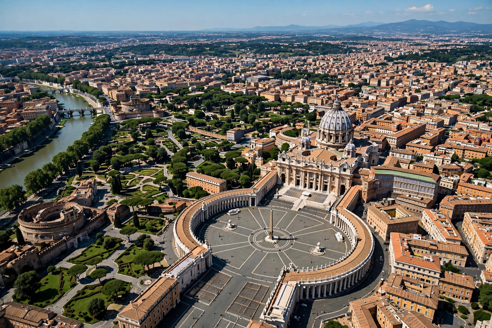

Vatican City

Vatican City is an independent city-state enclaved within Rome, Italy — the smallest state in the world by area and population — and the seat of the Roman Catholic Church, residence of the pope.
Overview
Established by the Lateran Treaty of 1929 with Italy, it contains St Peter's Basilica, the Sistine Chapel and the Vatican Museums, and is governed as an absolute elective monarchy by the pope.